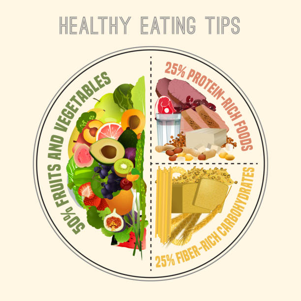
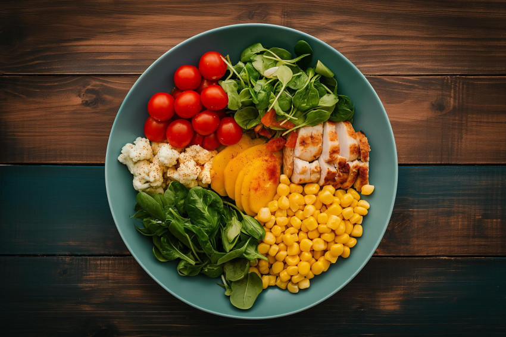

Nutrition is a foundational aspect of health and wellness...
The Role of Nutrition in Health
Understanding Macronutrients
- Carbohydrates: The body's main source of energy...
- Proteins: Essential for growth, tissue repair...
- Fats: Important for hormone production...
Micronutrients and Their Importance
- Vitamins: Support immune function...
- Minerals: Essential for bone health...
Meal Planning Tips
- Plan meals and snacks in advance...
- Incorporate a variety of foods from all food groups...
- Prepare meals in batches...
Common Dietary Approaches
- Mediterranean Diet: Emphasizes fruits, vegetables, fish...
- Plant-Based Diet: Focuses on plant-derived foods...
- Paleo Diet: Encourages whole foods...
Nutrition Guidelines
- Consume Whole Foods
- Limit Processed Foods
- Eat a Variety of Fruits and Vegetables
- Stay Hydrated

